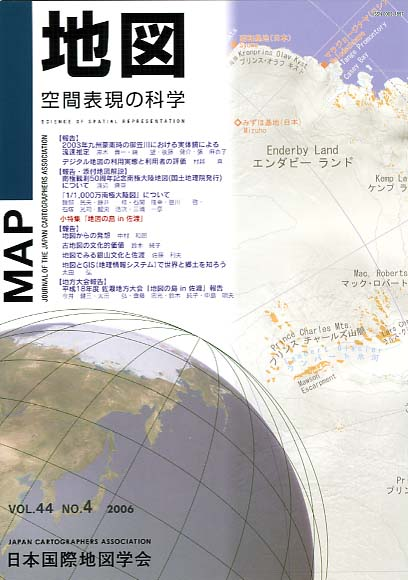

≪No.44 No.4 添付地図−抜粋≫

本図を許可なく複製・利用することを禁止します。
| 最 新 号 | バックナンバー | 添付地図目録 | 投 稿 規 程 |
Vol.44 No.4 （通巻１７６号） ２００６年
| 【報告】 | 2003年九州豪雨時の御笠川における実体鏡による流速推定 | 黒木貴一・磯 望・後藤健介・張 麻衣子 |
| キーワード：2003年九州豪雨、流速、カメロン効果、越流 | ||
| デジタル地図の利用実態と利用者の評価 | 村越 真 | |
| キーワード：デジタル地図、個人差、質問紙調査、大学生 | ||
| 【報告・添付地図解説】 | 南極観測50周年記念南極大陸地図（国土地理院発行）について | 渡辺 興亜 |
| 「1/1,000万南極大陸図」について | 磯部民夫・藤井 稔・石関隆幸・笹川 啓・石塚光司・鯉渕浩次・三浦一彦 | |
| 小特集「地図の島 in 佐渡」 | ||
| 【報告】 | 地図からの発想 | 中村和郎 |
| キーワード：平成18年度地方大会、地図からの発想、地図の島 in 佐渡、地下水の水位変化、地域調査 | ||
| 古地図の文化的価値 | 鈴木純子 | |
| キーワード：平成18年度地方大会、古地図、地図と文化、地図の島 in 佐渡 | ||
| 地図でみる銀山文化と佐渡 | 佐藤利夫 | |
| キーワード：平成18年度地方大会、佐渡金銀山文化、日本海海運と湊、地図の島 in 佐渡、古地図 | ||
| 地図とGIS（地理情報システム）で世界と郷土を知ろう | 太田 弘 | |
| キーワード：平成18年度地方大会、地図の島 in 佐渡、教育ＧＩＳ | ||
| 【地方大会報告】 | 平成18年度佐渡地方大会「地図の島 in 佐渡」報告 | 今井健三・太田 弘・齊藤忠光・鈴木純子・中島明夫 |
| キーワード：平成18年度地方大会、地図の島 in 佐渡、古地図、海図教育、教育ＧＩＳ、統合型ＧＩＳ | ||
| 【特別会員のページ】 | 財団法人 日本水路協会 | |
| 株式会社 昭文社 | ||
| 【学会記事】 | ||
| 【年間総目次】 | ||
| 【添付地図】 | 南極大陸図 | |
|
≪No.44 No.4 表紙≫ |
|
|  |
|
|
|
≪No.44 No.4 添付地図−抜粋≫ |
|
本図を許可なく複製・利用することを禁止します。 |